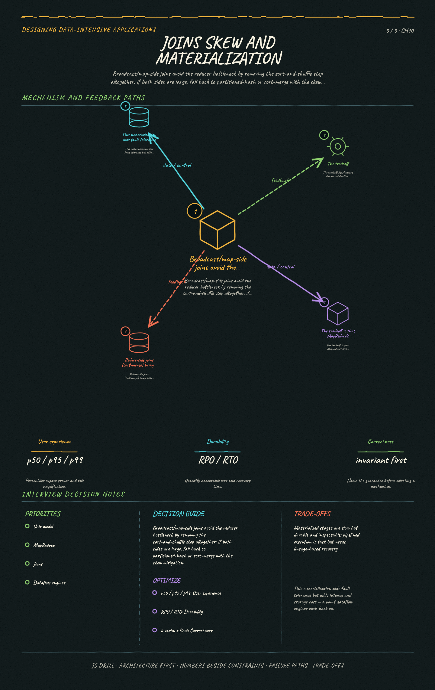

https://frosty110.github.io/js-drill/assets/system-design/infographics/ddia/ch10/joins-skew-and-materialization.pngHow systems that process a large, bounded input all at once — from Unix pipelines to MapReduce and modern dataflow engines — turn big datasets into derived outputs like search indexes and read-only key-value stores, prioritizing throughput over latency.
All questions, model answers and diagrams for Batch Processing →